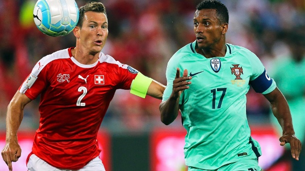

Die Fussball-Weltmeisterschaft 2018 findet, wie alle vier Jahre, auch diesmal im Sommer statt. Genauer gesagt vom 14. Juni bis zum 15. Juli 2018. .
Die Vorfreude auf die WM 2018 ist groß bei den Fussballfans. Vor allem die deutschen Fans blicken gebannt auf die WM kommendes Jahr, denn die DFB-Elf geht gehört als amtierender Weltmeister erneut zum engeren Favoritenkreis bei der WM 2018.
Mit Moskau, Jekaterinburg, Kaliningrad, Kasan, Nischni Nowgorod, Samara, Rostow am Dom, Saransk, Sotschi, Sankt Petersburg und Wolgograd wird es insgesamt elf Ausgrabungsorte während der WM 2018 geben.
